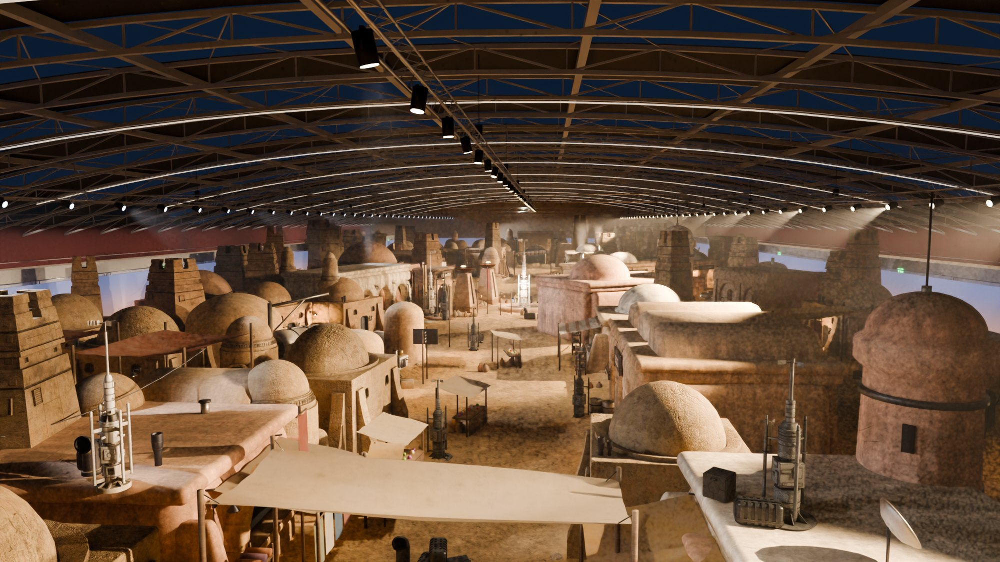
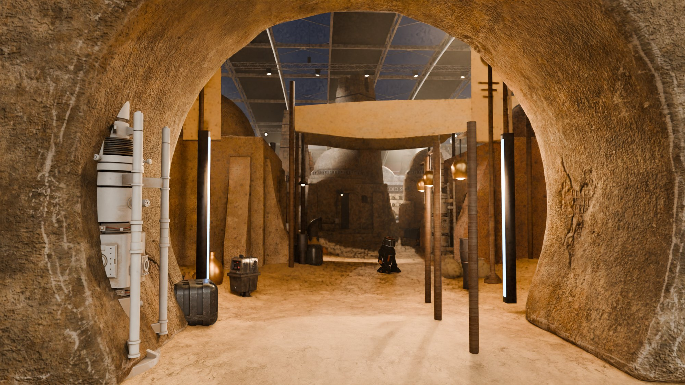

Na het gesprek met de docent op 11 november is het plan vastgesteld: een complete 3D omgeving om in een VR bril door te lopen, gebaseerd op de blauwdruk van een echte locatie, de RAI in Amsterdam. Het is een showcase voor één speler tegelijk, geen game, en de VR brillen lenen we van school.
Blender stond sinds 11 november op mijn MacBook. Het plein van Tatooine in Hal 1 van de RAI is als eerste uitgewerkt. Op 12 november heb ik de Europahal in Blender nagebouwd vanuit ons eigen three.js model van de RAI, want dat model blijft de vaste basis voor alles wat we hierna maken.
Op 13 november hebben we Tatooine niet langer op één gekozen stijl gebouwd, maar na goed onderzoek uit alle Star Wars referenties. De huisjes leken te veel op elkaar en op iglo’s, dus die zijn aangepast.


De eerste renders voelden nog niet echt en waren te blokkig. Daarom bouwen we realistischer en komt er een AI laag overheen. Ik leerde dat een render pas klopt als je hem beoordeelt op wat de opdrachtgever te zien krijgt, niet op hoe het model is opgebouwd.